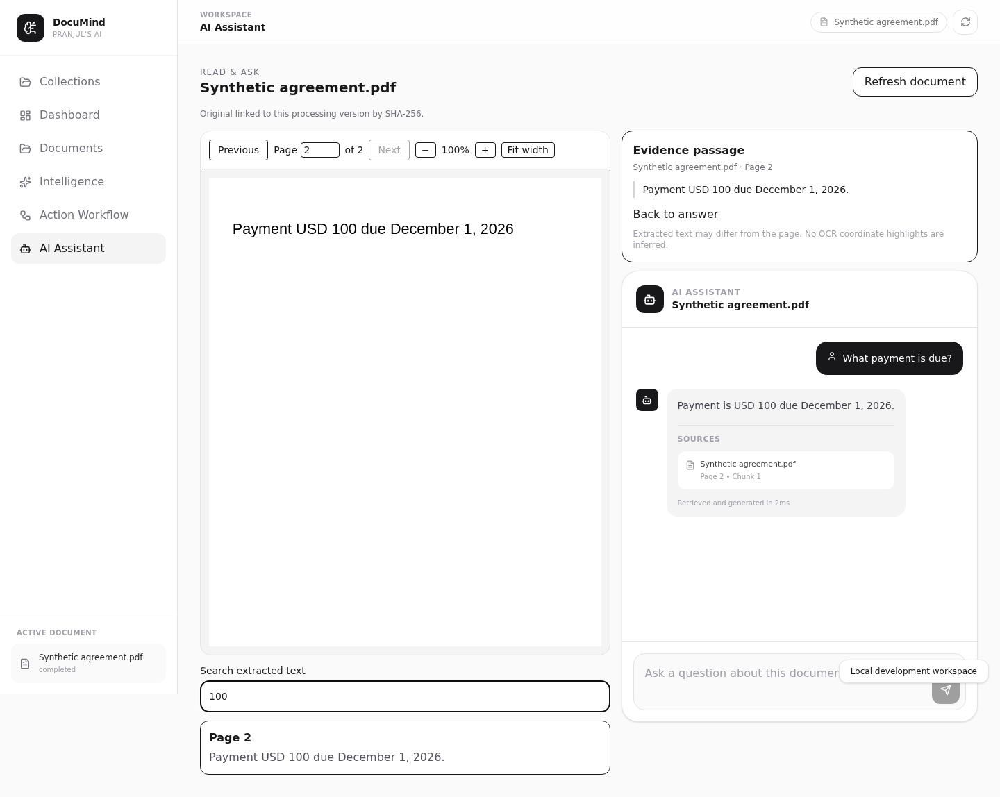
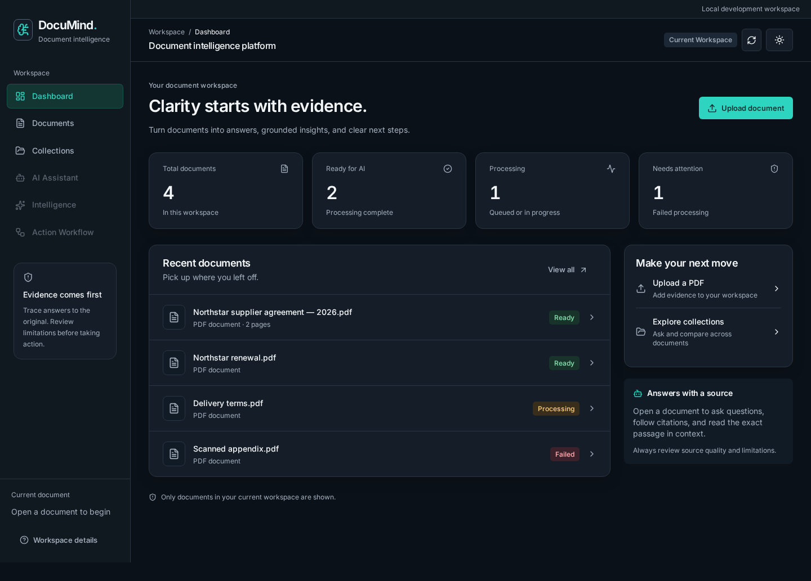

Read & ask
Original PDFs alongside grounded answers, exact evidence passages and page-specific source navigation.
Document intelligence · Portfolio showcase
Read the original. Follow the citation. Understand what the evidence supports—and where it stops.
This page uses synthetic examples and recorded screenshots. Sign-in, uploads, AI questions and exports are not interactive here. No documents are collected and no model requests are made.
A traceable document workflow
Capabilities implemented in the repository. A verified private deployment is required to use them with your own documents.
Original PDFs alongside grounded answers, exact evidence passages and page-specific source navigation.
Collections and questions across selected documents, with workspace and source-version checks.
Structured amounts, dates and supported obligations. Uncertainty and insufficient evidence remain visible.
Reviewed comparison snapshots, stale-source warnings and JSON/PDF exports that make no model calls.
Recorded on stable main
A real browser capture of the Evidence Viewer using a synthetic PDF and intercepted test answers. This screenshot does not demonstrate a live hosted backend.

Illustrative synthetic evidence
Document A · example passage
“Payment USD 100 due December 1, 2026.”
Document B · example passage
“Payment USD 200 due December 1, 2026.”
The stated amounts differ. This alone does not establish a contractual contradiction or whole-document equivalence.
Static, hand-authored illustration of the supported comparison scope. No AI endpoint is simulated.
Semantic comparison uses bounded rule-based normalization. It does not provide unrestricted AI semantic understanding, full-document completeness, or cryptographic verification of historical originals.
Design preview · separate draft PR #13
The enterprise interface is a separately reviewed design branch. It has not been merged into the stable main shown above.

Deployment status
Managed authentication, provider budgets, storage recovery and operating safeguards must pass deployment-specific checks before a private beta can open.